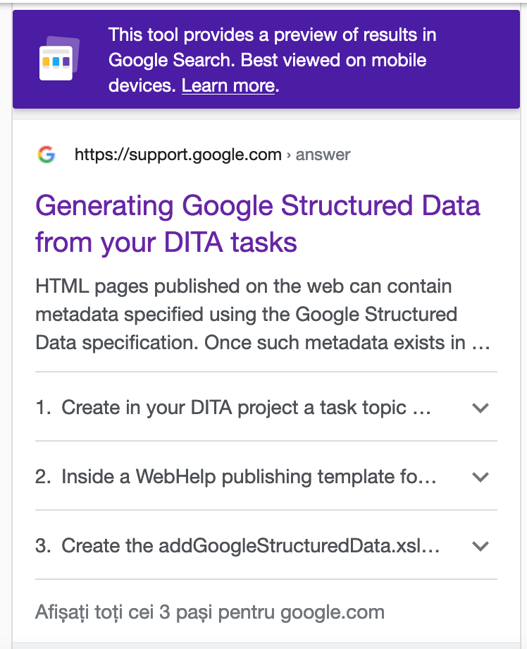

Generating Google Structured Data from your DITA tasks
17 May 2022
Read time: 3 minute(s)
HTML pages published on the web can contain metadata specified using the Google Structured Data specification. Once such metadata exists in an HTML page, the Google search engine can present, for example, steps to complete a certain task directly in the search page without the need to open the target HTML page. Below is a set of steps for automatically generating Google Structured Data metadata for DITA tasks when publishing DITA content to Oxygen WebHelp Responsive output, which can be customized using a publishing template mechanism.
-
In your DITA project, create a task type of topic with a specific
@outputclassattribute value to signal that you want the Google structured data to be automatically generated for it.<task id="task_id" outputclass="google-structured-data-steps"> <title>My task</title> </task> <steps> <step> <cmd>Step 1 content.</cmd> </step> <step> <cmd>Step 2 content.</cmd> </step> </steps> -
Inside a WebHelp publishing template folder, there is an opt file
that can contain links to various XSLT stylesheets that are useful for customizations. For
example, we'll add a link to a stylesheet for processing such special tasks and producing
a special script that contains details for each step.
<publishing-template> <name>.....</name> ...... <xslt> .... <extension file="xslt/addGoogleStructuredData.xsl" id="com.oxygenxml.webhelp.xsl.dita2webhelp"/> ..... </xslt> </webhelp> </publishing-template> -
Create the addGoogleStructuredData.xsl XSLT stylesheet that
processes the task contents and adds in the HTML head a script that contains the steps in
Google Structured Data format.
<xsl:stylesheet xmlns:xsl="http://www.w3.org/1999/XSL/Transform" xmlns:xs="http://www.w3.org/2001/XMLSchema" exclude-result-prefixes="xs" version="2.0"> <xsl:template match="*[contains(@class, ' topic/prolog ')]"> <xsl:if test="/*[@outputclass='google-structured-data-steps']"> <xsl:apply-templates select="/*" mode="google-structured-data"/> </xsl:if> <xsl:next-match/> </xsl:template> <xsl:template match="*" mode="google-structured-data"> <script type="application/ld+json"> { "@context": "https://schema.org", "@type": "HowTo", "name": "<xsl:value-of select="title"/>", "step": [ <xsl:for-each select="taskbody/steps/step"> { "@type": "HowToSection", "name": "Step", "position": "<xsl:value-of select="position()"/>", "itemListElement": [ { "@type": "HowToStep", "position": "1", "itemListElement": [ { "@type": "HowToDirection", "position": "1", "text": "<xsl:value-of select="normalize-space(cmd)"/>" }]}]} <xsl:if test="position() < last()">,</xsl:if> </xsl:for-each> ]} </script> </xsl:template> </xsl:stylesheet> - Publish the DITA XML Content to a web site.
- Test your HTML page using the Google Rich Results Tester: https://search.google.com/test/rich-results.
-
Once Google indexes your page, google search for it.
